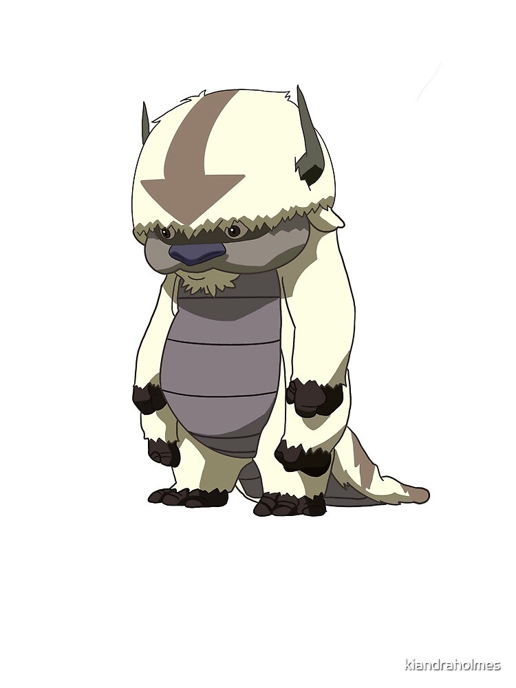

Lab 15: Fancy CSS

Objective:
The purpose of the lab was to learn about fancy CSS
features such as colors, shadows, gradients. As well as
filters, rounded corners, object fit, and transforms.
Difficulties
One of the diffulties of the lab was making sure the html
and CSS was working and that the content is rounded, fitted
The best thing to do is to experiment with the different
types of text fonts and colors.